Native pilot fidelity review
Approved preview on the left; SwiftUI on the right. Both use 393 × 852 logical dimensions at normal text size. Home remains approved and is unchanged in this pass.
System status bars, tab bars, symbols, and text rasterization remain native. Native screens retain real catalog data: four phases rather than the reference’s five, different later Sims entries, and actual document titles. Overlays omit system chrome. Longer native content scrolls above the tab bar.
Events
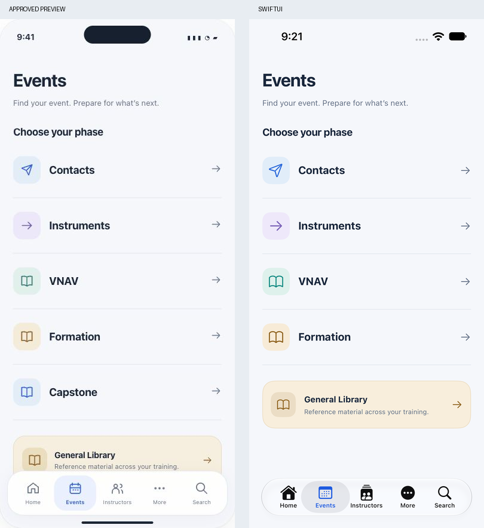
50% overlay, excluding system chrome
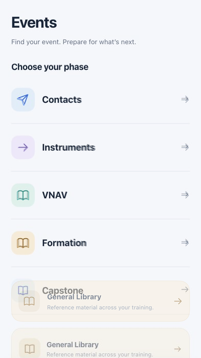
Sims event list
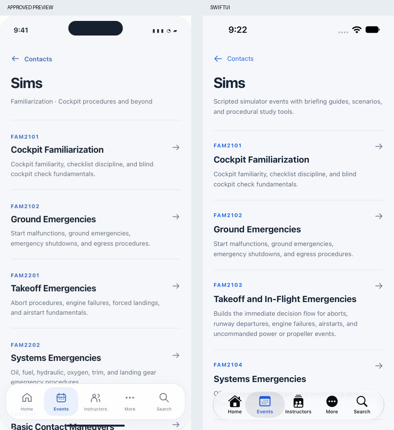
50% overlay, excluding system chrome
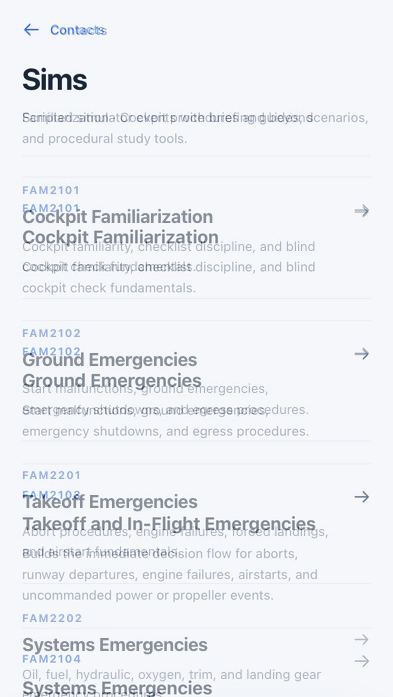
Event detail
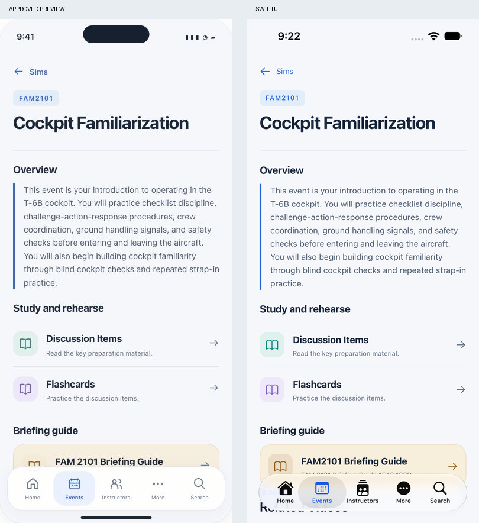
50% overlay, excluding system chrome
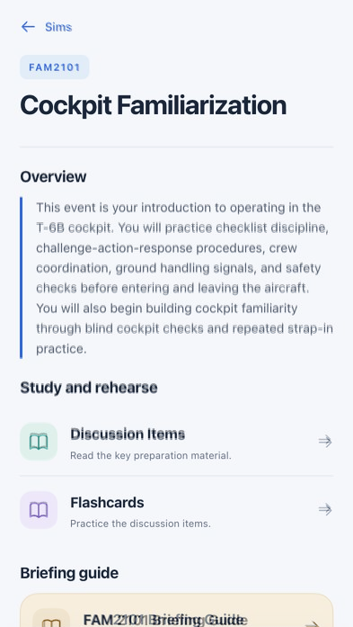
Discussion reading
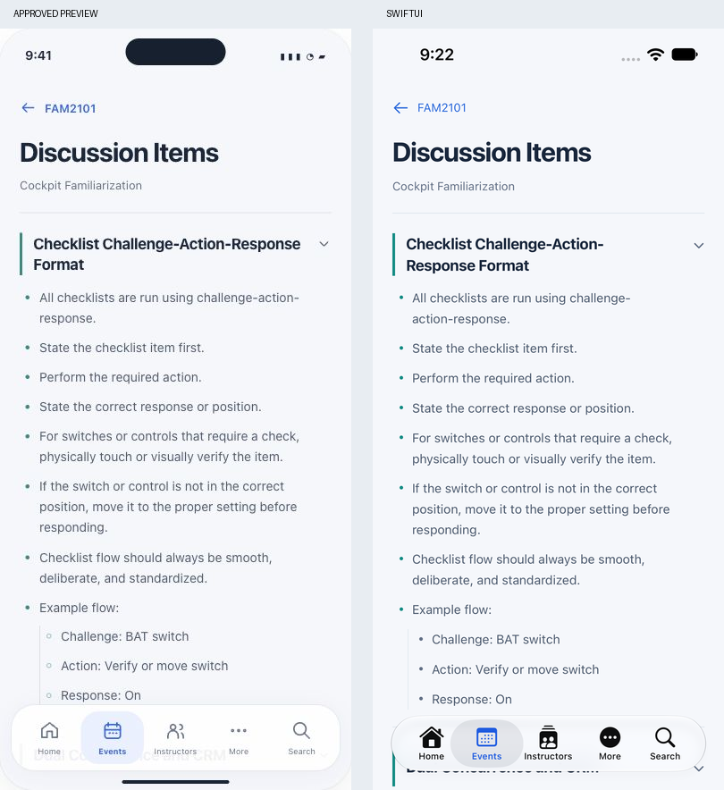
50% overlay, excluding system chrome
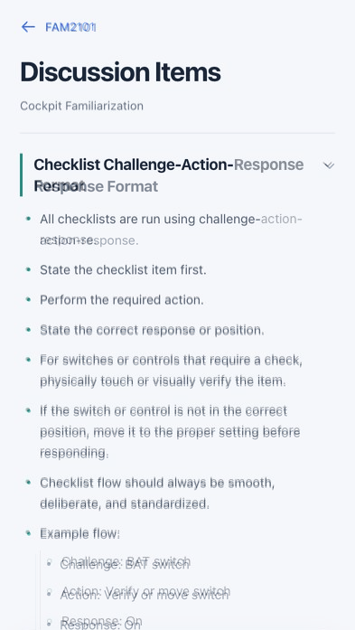
Deck overview
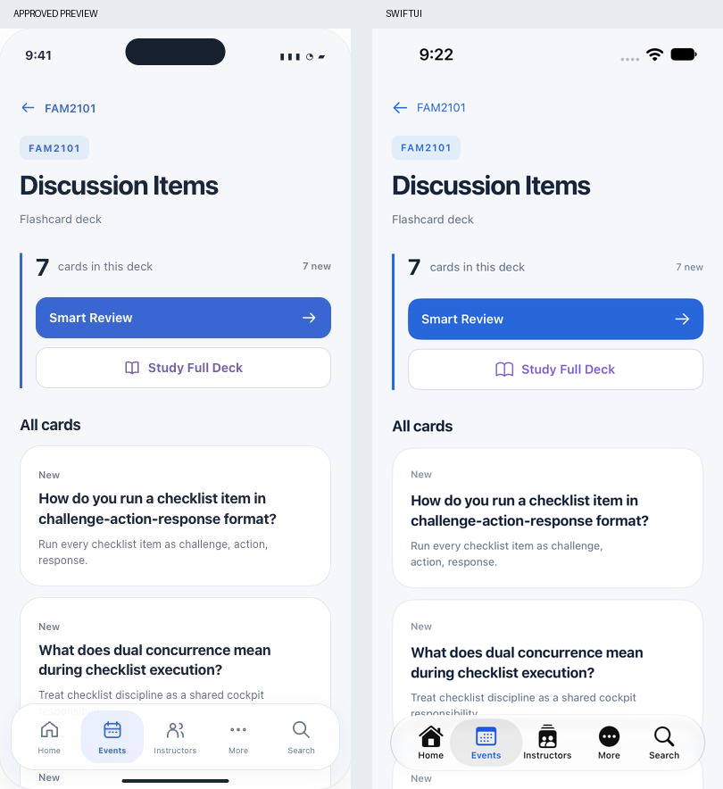
50% overlay, excluding system chrome
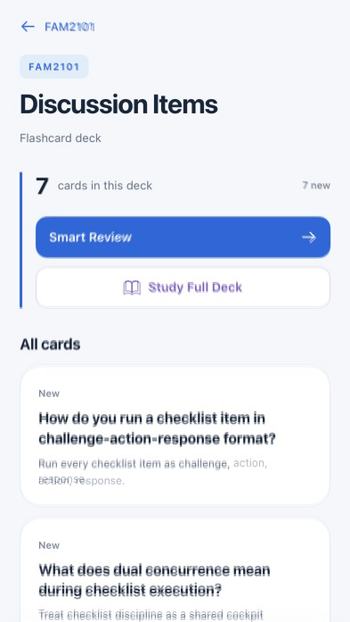
Question
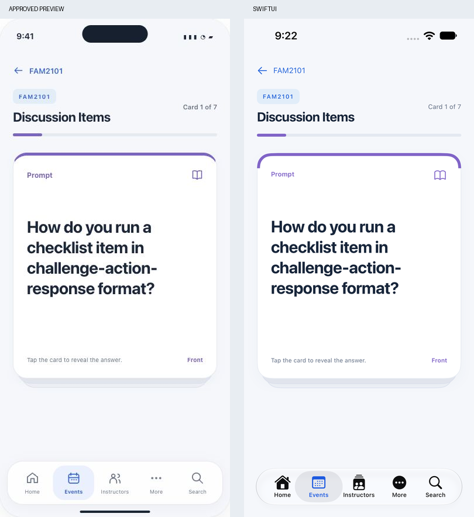
50% overlay, excluding system chrome
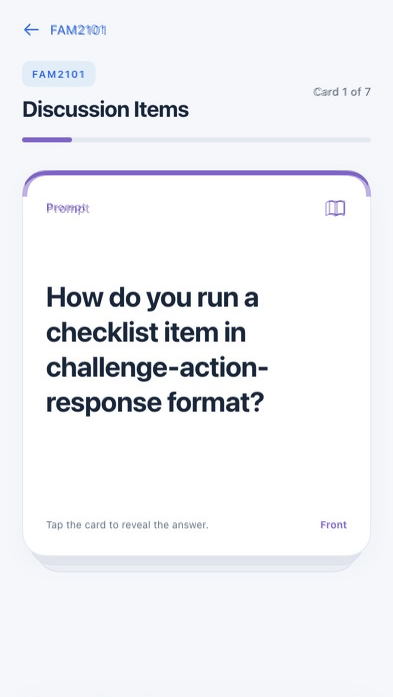
Answer
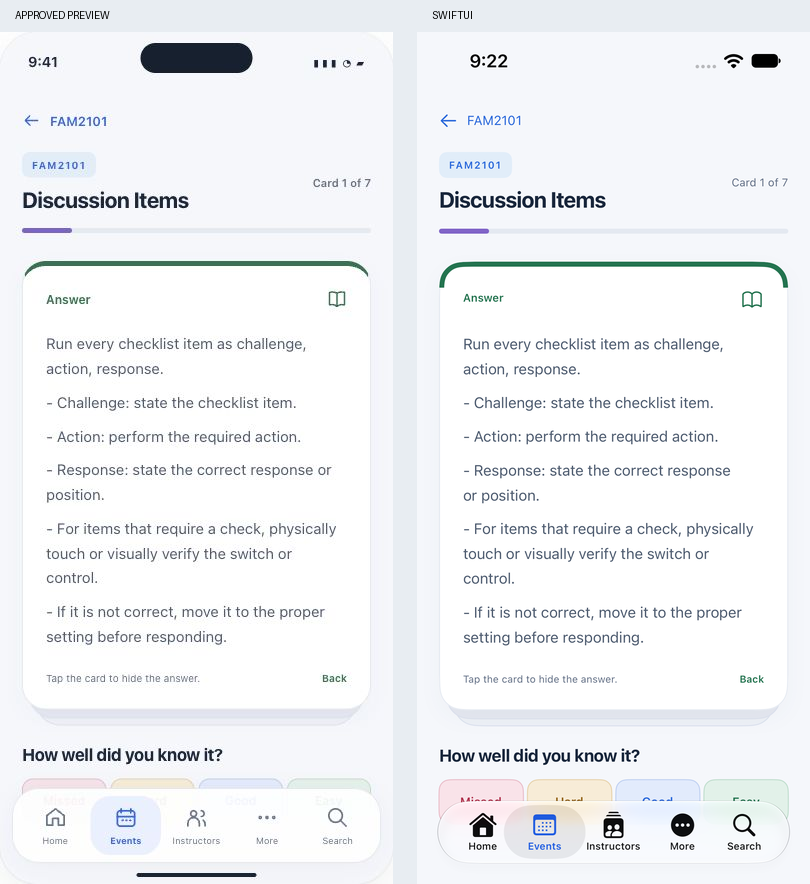
50% overlay, excluding system chrome
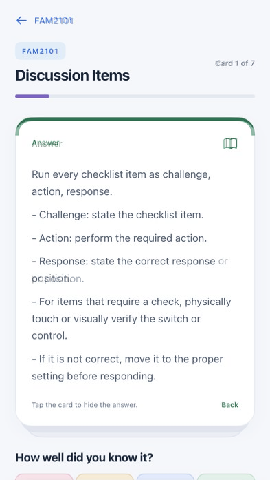
Rating controls and scrolling clearance
The full set of controls scrolls above the native tab bar. At larger text sizes, ratings use two columns.